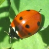
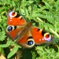
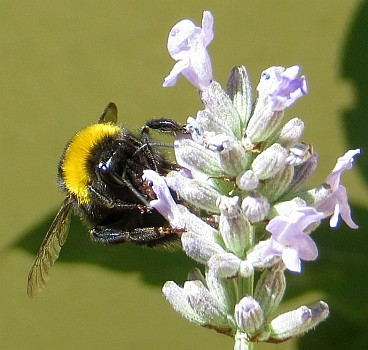
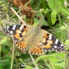

|  |
 |
 |
 |
Des bourdons et des moûques à myi - Des pêtres - Des papillotes et des cahuches
|
Jèrriais |
Angliais |
|
la bête à chent pids |
centipede |
|
la bête du Bouôn Dgieu, la vaque du Bouôn Dgieu, la dêmouaîselle, la pâssecole, la paqu'nôte |
ladybird |
| bête du Bouôn Dgieu à sept picots | Seven-spot Ladybird Coccinella 7-punctata |
| bête du Bouôn Dgieu à seize picots | Sixteen-spot Ladybird Tytthaspis 16-punctata |
|
lé bibet |
gnat; midge |
|
lé bliu |
louse |
|
lé bourdon à j'va |
bot-fly |
|
la bog'se |
bed bug |
|
un brébion |
sheep ked |
| des couochons | grain weevils |
|
la crabe |
louse |
| un cricot | cricket |
| un critchet d'avoût | two-coloured grasshopper |
| un critchet d'cheunm'née | house cricket |
| un critchet d'falaise | mole-cricket |
|
lé critchet |
grasshopper |
|
lé critchet d'âtre |
house cricket |
| critchet picoté | Speckled Bush-Cricket Leptophyes punctatissima |
| critchet des clios | Field Grasshopper Chorthippus Brunneus |
|
lé dgiâbl'ye |
stag-beetle |
| eune d'mouaîselle | damselfly |
|
lé doryphore |
colorado beetle |
|
l'êtchèrbot, lé bourdon |
dor-beetle |
| un êtchèrbot d'mielle | Corrugated scarab (Brindalus porcicollis) |
| êtchèrbot d'côte | Rove Beetle Paederus riparius |
| eune êlégante moûque à flieurs | Chrystotoxum elegans Zipper-back |
| un esprit gêné | daddy-long-legs, cranefly |
| un êtchèrbot d'boûsot | dung beetle |
|
lé freunmion, lé frémîn |
ant |
|
un haînu |
woolly aphis |
|
lé hanneton |
cockchafer |
|
lé hanneton |
may-bug |
| un hanneton d'Êté | Summer chafer |
| un hèrpon | St Mark's fly |
|
lé j'va d'St George |
great green grasshopper |
|
la lâque |
tick |
|
les lentes |
nits |
|
eune mite |
mite |
|
la moûque |
fly |
|
la moûque à boûse |
dungfly |
|
la moûque dé tchuîsinne |
housefly |
|
la moûque à longs pids, lé prêtre |
cranefly |
|
la moûque à paîsson |
greenbottle |
|
la moûque à vèrs |
bluebottle |
|
la moûque d'un jour |
may-fly |
|
la moustique |
mosquito |
| la moûque à paîsson | greenbottle |
|
lé magot |
maggot |
|
lé mille-pids |
millipede |
|
lé morpion |
crab louse |
| eune moûque à flieurs | hoverfly |
|
lé moûtchet |
dragonfly |
| eune moûque à vrai | kelp fly |
| eune moûque à scorpion | scorpionfly |
| eune grande moûque à flieurs pielée | great pied hoverfly |
| eune moûque à mistenfliûte | Pocota personata Wannabee fly |
| eune moûtchette | small fly, small insect |
| un moûtchet rîlyi | Common Darter Sympetrum striolatum |
| un grand moûtchet | Emperor Dragonfly Anax imperator |
|
eune néthe bête |
ground beetle |
|
la pèrche-ouothelle |
earwig |
|
la peûnnaise |
gorse shield-bug |
|
lé peurchon |
greenfly |
| la pînche-ouothelle, ouothilliéthe, pèrche-ouothelle, pînch'rêsse | earwig |
|
lé potithon |
black beetle |
|
lé potithon |
cockroach |
|
lé poux |
louse |
|
la puche |
flea |
|
la puche dé tèrre |
flea-beetle |
| un puchon | greenfly |
|
lé scorpion |
mole-cricket |
|
lé taon |
horsefly |
|
la teigne |
silver-fish |
|
eune trie d'bouais |
woodlouse |
|
lé vèr à souaie |
silkworm |
|
lé vèr dé tèrre |
earthworm |
|
lé vèr solitaithe |
tapeworm |
|
lé vèrpeu |
glow-worm |
| un gris vèr porte-pouque | micro-moth larva of grey bagworm |
| eune vèrte sîngnal'rêsse | Poecilobothrus nobilitatus Semaphore fly |
| eune bliue d'mouaîselle | common blue damselfly |
| eune d'mouaîselle en janne fil'ye | azure blue damselfly |
| eune d'mouaîselle à bliue coue | blue-tailed damselfly |
| un moûtchet rîlyi | common darter dragonfly |
| eune d'mouaîselle d'êm'raude | willow emerald damselfly |
| un moûtchet rapacyi èrrant | migrant hawker dragonfly |
| eune bliue d'mouaîselle | Blue-tailed Damselfly Ischnura elegans |
| un grand vèrt critchet | Great Green Bush-Cricket Tettigonia viridissima |
| eune bête dé bave dé coucou | Froghopper Philaenus spumarius |
| eune vèrte peûnnaîthe | Green Shield Bug Palomena prasina |
| un p'tit couochon | Weevil Polydrusus formosus |
| un prêtre | Harvestman Leiobunum rotundum |
| un êtchèrbot à flieurs | Flower Beetle Oedemera nobilis |
| des mites du geon | gorse spider mites |
| un faux-scorpion rouogeâtre | reddish two-eyed house scorpion |
| un rouoge soudard | Soldier Beetle Rhagonycha fulva |
Des bourdons et des moûques à myi
|
la moûque à myi, lé bourdon à myi |
honey bee |
|
lé vêpre |
wasp |
|
la vielle des bourdes |
queen bee |
|
lé maître bourdon |
queen bee |
|
la méthe ès moûques |
queen bee |
|
lé péthe ès bourdons |
queen bee |
| bourdon d'tèrre | Buff-tailed Bumblebee Bombus terrestris |
| bourdon à pid à pé | Hairy-footed flower bee Anthophora plumipes |
| rouoge bourdon à machon | Red Mason Bee Osmia bicornis |
|
la bourde, lé bourdon |
bumblebee |
| un bourdon des prés | common carder bee |
| un bourdon à pid à pé | hairy-footed bee |
|
un bourdon d'tèrre |
burrowing bee |
| un bourdon au coucou | nomad bee |
| un bourdon d'mielle | vernal mining bee |
| un vêpre à rouoge êpart | Chrysis fulgida Shimmering ruby-tail |
| un vêpre vengeabl'ye | Aporus unicolor Cutpurse wasp |
| un vêpre tue-aîsse | European beewolf |
| eune moûque au crai-qu'oui | Halictus eurygnathus Elusive knapweed bee |
| eune moûque des néthes têtes | Halictus eurygnathus Elusive knapweed bee |
| un pique-pêtre | Aporus unicolor Cutpurse wasp |
|
lé frêlon |
hornet |
|
lé frêlon Âsiatique |
Asian hornet |
|
lé pêtre |
spider |
|
lé pêtre à sou |
money-spider |
|
lé pêtre d'avoût, lé prêtre, lé couôsîn |
harvest-spider |
| un pêtre dé gardîn | garden spider |
| un pêtre sauteux | jumping spider |
| un pêtre à pid d'piègne | male ant-hunting spider |
| un pêtre à crabe | White Crab Spider Misumena vatia |
| un pêtre à vêpre | Wasp Spider Argiope bruennichi |
|
lé rouoge soudard |
red spider |
|
lé soudard |
red spider |
Des papillotes et des cahuches
|
la papillote |
butterfly |
|
la cahuche, lé papillon d'niet, l'ange |
moth |
|
la carpéleuse |
caterpillar |
| eune jaune papillote dé Jèrri | Jersey Tiger Moth Euplagia quadripunctaria |
|
la catte |
tigermoth caterpillar |
| eune blianche papillote | Large White Butterfly Pieris brassicae |
| eune bliue papillote | Common Blue Butterfly Polyommatus icarus |
| eune breune papillote | Meadow Brown Butterfly Maniola jurtina |
| eune papillote au dgiâbl'ye | Red Admiral Butterfly Vanessa atalanta |
|
l'êcarlate |
Red Admiral Butterfly Vanessa atalanta |
| eune jaune papillote | Cinnabar Moth Tyria jacobaeae |
| eune papillote à coue d'héthonde | swallowtail butterfly (Papilio machaon) |
| eune papillote saûticot'rêsse | Small Skipper Butterfly Thymelicus sylvestris |
|
la vipéthe à bouais |
goat-moth |
| eune cahuche à trompe | Small Elephant Hawkmoth Deilephila elpenor |
| eune cahuche à blianche plieunme | White Plume Moth Pterophorus pentadactyla |
| eune cahuche à l'êponge | gypsy moth |
| eune cahuche pèrlée | white pearl moth |
| eune cahuche dgêp'rêsse | hummingbird hawk moth |
| eune cahuche à brun tchu | brown tail moth |
| des mitheurs | checkered skipper butterflies |
| eune paontêsse, eune papillote paontêsse | peacock butterfly |
| eune papillote sauticot'rêsse | Essex skipper butterfly |
| eune bliue papillote | common blue butterfly |
| des cahuches du chuchet | five spot burnet moths |
| eune papillote des ronches | green hairstreak butterfly |
| eune cahuche des saux à rose barres | pink barred sallow moth |
| un p'tit tchuivré | small copper butterfly |
| eune jaune papillote brodée | yellow shell moth |
| eune papillote à coue d'héthonde | swallowtail butterfly |
| eune carpéleuse dé papillote à coue d'héthonde | swallow tail caterpillar |
| eune belle du tcheurdron | painted lady (Vanessa cardui) |
| eune blianche au dgiâbl’ye | white admiral (Limenitis camilla) |
| eune blianche marbrée | marbled white (Melanargia galathea) |
| eune bliue coue | long-tailed blue (Lampides boeticus) |
| eune bliue papillote dé la néthe êpîngne | holly blue (Celastrina argiolus) |
| eune breune des prés | meadow brown (Maniola jurtina) |
| eune grande sauticot'rêsse | large skipper (Ochlodes sylvanus) |
| eune grande tortue | large tortoiseshell (Nymphalis polychloros) |
| eune jaune dgett'rêsse | gatekeeper (Pyronia tithonus) |
| eune jaune papillote | brimstone (Gonepteryx rhamni) |
| eune p'tite blianche papillote | small white (Pieris rapae) |
| eune papillote à quat’ ièrs | grayling (Hipparchia semele) |
| eune papillote d'ortchies | small tortoiseshell (Aglais urticae) |
| eune papillote dé l'assinne | orange tip (Anthocharis cardamines) |
| eune papillote dé l'orme | white-letter hairstreak (Satyrium w-album) |
| eune papillote dé muthâle | wall (Lasiommata megera) |
| eune papillote des melles | ringlet (Aphantopus hyperantus) |
| eune papillote du navet | green-veined white (Pieris napi) |
| eune papillote du tchêne | purple hairstreak (Neozephyrus quercus) |
| eune picotée des bouaîs'sies | speckled wood (Pararge aegeria) |
| un brun argus | brown argus (Aricia agestis) |
| un jaune soufré | clouded yellow (Colias croceus) |
| un pale soufré | pale clouded yellow (Colias hyale) |
| un Robèrt-lé-Dgiâbl'ye | comma (Polygonia c-album) |
|
la vêpriéthe |
wasps' nest |
|
la frêlonniéthe |
hornets' nest |
|
la freunmionniéthe |
anthill |
Viyiz étout: